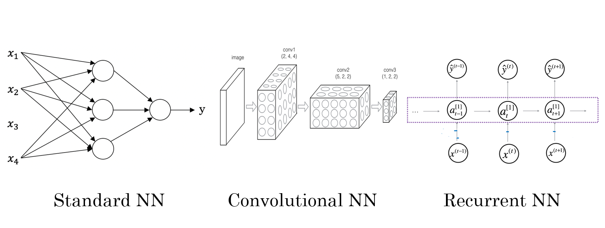

AndrewNg-DL-Course1-Week1¶
- Week 1 : Introduction
- Week 2 : Basics of Neural Network programming 神经网络编程框架
- Week 3 : One hidden layer Neural Networks 单隐层神经网络
- Week 4 : Deep Neural Networks 多层神经网络
1.1 WHAT IS NEURAL NETWORKS¶
神经网络里面的神经元¶
由图可得，通过==神经元==可以从输入x到输出y。

1.2 Supervised Leaning in Neural Network¶
用神经网络进行监督学习
NN types¶
Different NN types are used for different problems:

Structured Data and Unstructured Data¶
| Structured Data | Unstructured Data |
|---|---|
| database | audio/image/text |
| each feature/column has a well-defined meaning | no well-defined meaning for pixels/tokens |
| 表格型数据 | 一些抽象的数据（音频，图像，文本） |
1.3 Why is deep learing taking off¶
- 讨论深度学习崛起别后的一些主要驱动因素

- 传统学习算法
- 支持向量机 support vector machine
- 逻辑回归 logistic regression

Scale drives deep learning progress¶
- 在小训练集阶段
- 各种算法（NN or 传统算法） 之间的相对顺序并不是很明确
- 性能取决于人的skill at hand engineering features
- ✅有人训练的一个SVM表现得比一个大型神经网络更好
- 在大训练集阶段
- 大型的神经网络占主导地位 dominate the other approaches
computation faster¶
new algorithms¶
e.g. from sigmoid to ReLU, which in turn speeds up computation too
1.4 Test¶
What does the analogy "Al is the new electricity" refer to?
Similar to electricity starting about 100 years ago, Al is transforming multiple industries.
Al is powering personal devices in our homes and offices, similar to electricity.
Through the "smart grid"【智能电网】, Al is delivering a new wave of electricity.
Al runs on computers and is thus powered by electricity, but it is letting computers do things not possible before.
请注意: 吴恩达在视频中表达了同样的观点。
A
Which of these are reasons for Deep Learning recently taking off? (Check the three options that apply.)
We have access to a lot more computational【计算的】 power.
Deep learning has resulted in significant improvements in important applications such as online advertising, speech recognition, and image recognition.
Neural Networks are a brand new field.
We have access to a lot more data.
A D 三个答案？？
- Recall this diagram of iterating over different ML ideas. Which of the statements below are true? (Check all that apply.)
Being able to try out ideas quickly allows deep learning engineers to iterate more quickly.
Faster computation can help speed up how long a team takes to iterate to a good idea.
It is faster to train on a big dataset than a small dataset.
Recent progress in deep learning algorithms has allowed us to train good models faster (even without changing the CPU/GPU hardware).

ABD
When an experienced deep learning engineer works on a new problem, they can usually use insight【洞察力】 from previous problems to train a good model on the first try, without needing to iterate multiple times through different models. True/False?
True
False
==B==
Note: Maybe some experience may help, but nobody can always find the best model or hyperparameters without iterations.(注：也许之前的一些经验可能会有所帮助，但没有人总是可以找到最佳模型或超参数而无需迭代多次。)
- Which one of these plots represents a ReLU activation function?
- Images for cat recognition is an example of “structured” data, because it is represented as a structured array in a computer.
True/False?

False
- A demographic【人口统计学】 dataset with statistics on different cities' population, GDP per capita, economic growth is an example of "unstructured" data because it contains data coming from different sources.
True/False?
False
Why is an RNN (Recurrent【循环】 Neural Network) used for machine translation, say translating English to French? (Check all that apply.)
==It can be trained as a supervised learning problem.==
It is strictly more powerful than a Convolutional Neural Network (CNN).
It is applicable【使用的】 when the input/output is a sequence (e.g., a sequence of words).
RNNs represent the recurrent process of Idea->Code->Experiment->idea
==A==C
Note: ==RNN can be trained as a supervised learning problem.==
- In this diagram which we hand-drew in lecture, what do the horizontal axis (x-axis) and vertical axis (y-axis) represent?

- x-axis is the amount of data
- y-axis (vertical axis) is the performance of the
Assuming the trends described in the previous question's figure are accurate (and hoping you got the axis labels right), which of the following are true? (Check all that apply.)
Decreasing the size of a neural network generally does not hurt an algorithm's performance, and it may help significantly.
Increasing the training set size generally does not hurt an algorithm's performance, and it may help significantly.😄
Decreasing the training set size generally does not hurt an algorithm's performance, and it may help significantly.
Increasing the size of a neural network generally does not hurt an algorithm's performance, and it may help significantly.😄